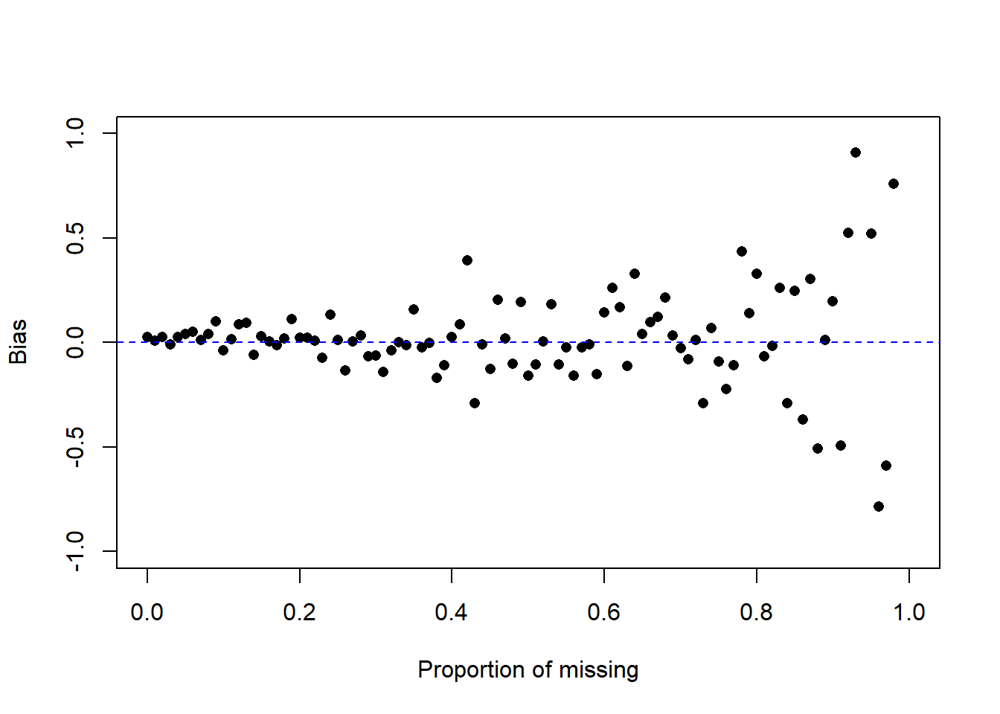

14.3 Missing Data Mechanisms
Process by which some units observed, some units not observed
- Missing Completely at Random (MCAR): The probability that a data point is missing is completely unrelated (independent) of any observed and unobserved data or parameters.
- P(Y missing| X, Y) = P(Y missing)
- Ex: Miscoding or forgetting to log in answer
- Missing at Random (MAR): The probability that a data point is missing is independent can be explained or modeled by other observed variables.
- P(Y missing|x, Y) = P(Y missing | X)
- Ex: Y = age, X = sex
- Pr (Y miss| X = male) = 0.2
- Pr (Y miss| X = female) = 0.3
- Males people are less likely to fill out an income survey - The missing data on income is related to gender - After accounting for gender the missing data is unrelated to income.
- Not missing at Random (NMAR): The probability that a data point is missing depends on the value of the variable in question.
- P(Y missing | X, Y) = P (Y missing|X, Y)
- Ex: Y = income, X = immigration status
- Richer person may be less willing to disclose income
- Illegal immigrant may be less willing to disclose income
- Richer person may be less willing to disclose income
- P(Y missing | X, Y) = P (Y missing|X, Y)
Does it matter to inferences? Yes!
14.3.1 Demonstration via Simulation
14.3.1.1 MCAR
- Draw a random sample of size 100 from a standard Normal distribution (Z) and calculate the mean.
z <- rnorm(100)
mean.z <- mean(z)
mean.z
## [1] 0.07627938- Delete data at a rate of \(p\) and calculate the complete case (available) mean.
- Sample 100 random Bernoulli (0/1) variables with probability \(p\).
x <- rbinom(100, 1, p=.5)- Find out which elements are are 1’s
delete.these <- which(x==1)- Set those elements in
ztoNA.
z[delete.these] <- NA- Calculate the complete case mean
mean(z, na.rm=TRUE) ## [1] 0.05156296 - Calculate the bias
mean.z - mean(z, na.rm=TRUE)
## [1] 0.02471642How does the bias change as a function of the proportion of missing? Let \(p\) range from 0% to 99% and plot the bias as a function of \(p\).
calc.bias <- function(p){
mean.z - mean(ifelse(rbinom(100, 1, p)==1, NA, z), na.rm=TRUE)
}
p <- seq(0,.99,by=.01)
plot(c(0,1), c(-1, 1), type="n", ylab="Bias", xlab="Proportion of missing")
points(p, sapply(p, calc.bias), pch=16)
abline(h=0, lty=2, col="blue")
14.3.1.3 NMAR: Pure Censoring
Consider a hypothetical blood test to measure a hormone that is normally distributed in the blood with mean 10\(\mu g\) and variance 1. However the test to detect the compound only can detect levels above 10.
z <- rnorm(100, 10, 1)
y <- z
y[y<10] <- NA
mean(y, na.rm=TRUE)
## [1] 10.87093When the data is not missing at random, the bias can be much greater.
Problem: Usually you don’t know the missing data mechanism.
Degrees of difficulty
- MCAR is easiest to deal with.
- MAR: we can live with it.
- NMAR: most difficult to handle.
Evidence?
What can we learn from evidence in the data set at hand?
- May be evidence in the data rule out MCAR - test responders vs. nonresponders.
- Example: Responders tend to have higher/lower average education than nonresponders by t-test
- Example: Response more likely in one geographic area than another by chi-square test
- No evidence in data set to rule out MAR (although there may be evidence from an external data source)
What is plausible?
- Cochran example: when human behavior is involved, MCAR must be viewed as an extremely special case that would often be violated in practice
- Missing data may be introduced by design (e.g., measure some variables, don’t measure others for reasons of cost, response burden), in which case MCAR would apply
- MAR is much more common than MCAR
- We cannot be too cavalier about assuming MAR, but anecdotal evidence shows that it often is plausible when conditioning on enough information
Ignorable Missing
- If missing-data mechanism is MCAR or MAR then nonresponse is said to be “ignorable”
- Origin of name: in likelihood-based inference, both the data model and missing-data mechanism are important but with MCAR or MAR, inference can be based solely on the data model, thus making inference much simpler
- “Ignorability” is a relative assumption: missingness on income may be NMAR given only gender, but may be MAR given gender, age, occupation, region of the country